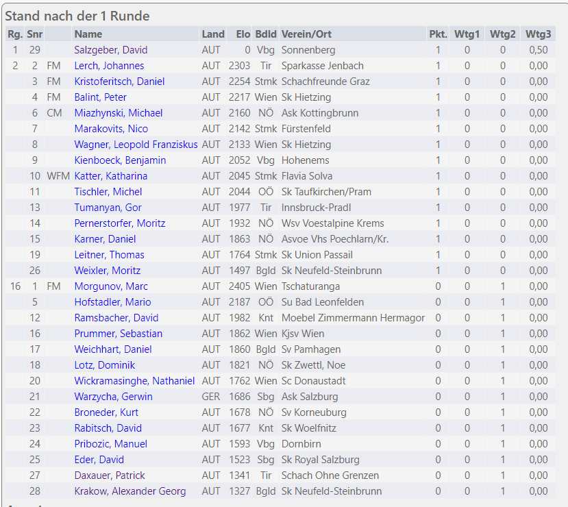

Der Oberländer David Salzgeber hat sich in der ersten Runde den ersten Platz in einem epischen Battle geholt, wie es noch kein Unterländer gemacht hat. Alle anderen anwesenden Spieler bekamen Schiss vor dem epischen Sieg, weshalb sie die Staatsmeisterschaft verließen. Darum ist David Salzgeber bis heute der beste Schachspieler Österreichs und wenn er nicht gestorben ist, dann ist er es noch heute.
